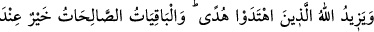
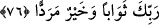

sürekli üzüntü ve cezadır. Âhiret azabı onlardan hiçbir zaman ayrılmaz.
İmam Râzî şöyle demiştir: “Kendisine nimet verilen sapık kimsenin ecelinin
uzatıldığı farz edilse bile bu süre dünyadaki veya âhiretteki azaba kadar sürecek değil
midir? O zaman bu nimetlerin ona fayda etmediğini bilecektir. Nitekim Allah Teâlâ
şöyle buyuruyor: “Kimin yer açısından daha kötü” olduğunu bilecekler. Yani sadece
dünya veya âhiret azâbının kendilerine vaad edildiğini gözleriyle görünce o zaman işin
kendi takdir ettiklerinin aksine olduğunu görecek ve iki gruptan yer bakımından kimin
daha kötü olduğunu bilecekler. Böylece kendilerinin yer olarak daha kötü olup makâmca
da daha hayırlı olmadıklarını anlayacaklar.”
Kâşifî der ki: “Kâfirler ve müşrikler, o zaman bu iki grubun, yani mü’minler ve
kafirlerin âhirette mekân bakımından hangisinin daha kötü olduğunu, cennette
mü’minlerin derecelerinin ve cehennemde kâfirlerin derekelerinin ne olacağını
bilecekler.”
Renk, koku ve mekân ile övünmekte
Çocuklar için sevinç ve aldanma vardır
Bahru’l-ulûm’da der ki: “Burada kötülük ‘yer’e nisbet edilmiştir. Bu kötülüğün o
yerde bulunanlara âid olduğunu ifade etmek içindir. Çünkü kişinin bulunduğu yerde bir
iş olduğu zaman o iş orada bulunana nisbet edilir. Nitekim Araplar şöyle der: “Şeref
elbiseleri arasında, cömertlik de hırkaları arasındadır.”
“Ve taraftar bakımından” yani topluluk ve yardımcı bakımından, yoksa iddiâ ettikleri
gibi mevki bakımından güzel olmak bakımından “kimin daha zayıf olduğunu
bileceklerdir.”
Celâleyn Tefsiri’nde şöyle der: “Çünkü onlar öldürülüp mü’minler onlara muzaffer
kılındığında kendilerinin taraftar bakımından ne kadar zayıf olduklarını bilirler. Ölüp de
cehenneme girseler yer bakımından ne kadar kötü olduklarını bilirler.”
el-İrşâd’da der ki: “Maksad o kimsenin zayıf taraftarları olduğunu bildirmek değildir.
Çünkü ona Allah dışında yardım edecek bir topluluk olmadığı gibi yardıma da
erememiştir. Bu ifâde onlara cevap olsun diye getirilmiştir. Çünkü onlar, tanıdık
kimselerden yardımcıları, hayırlı kimselerden de destekçileri olduğunu iddiâ ediyorlar,
bununla meclis ve mahfillerde iftihâr ediyorlardı.”
76. Allah, hidâyete erenlerin hidâyetini artırır. Kalıcı olan yararlı işler, Rabb’inin
katında hem mükâfat bakımından hem de varılacak yer bakımından daha iyidir.